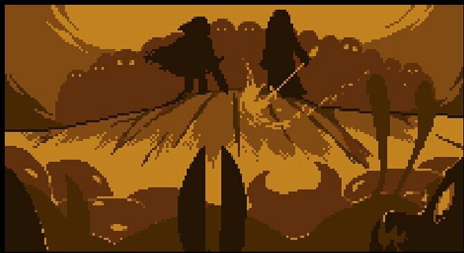

¿Que es undertale?
Undertale es un videojuego de rol creado por el desarrollador independiente Toby Fox, en el que se adopta el control de un niño humano que ha caído en un mundo subterráneo conocido como el subsuelo, una región enorme aislada debajo de la superficie de la tierra, separada por una barrera mágica. A lo largo de la partida se encuentra con varios monstruos durante la misión de regresar a la superficie, principalmente a través del sistema de combate; navegando a través de mini ataques bullet hell del adversario y optar por pacificar o someter a los monstruos para salvarlos en lugar de matarlos. Estas opciones afectan a la jugabilidad, los diálogos, los rutas y la historia, cambiando en función de los resultados.
Fuera de algunas ilustraciones, Fox desarrolló la totalidad del juego por sí mismo, incluido el guion y la música. El juego se inspiró en varias fuentes. Estos incluyen la serie de juegos de rol Mother, Brandish y Mario & Luigi, la serie bullet hell Touhou Project y el programa de comedia británico Mr. Bean. Originalmente, Undertale debía tener una duración de dos horas y estaba programado para ser lanzado a mediados de 2013. Sin embargo, previo a su lanzamiento, el desarrollo se retrasó durante tres años.
Historia

La historia de Undertale toma lugar en el subsuelo, un reino en el que los monstruos fueron desterrados después de que la guerra empezase entre ellos y los humanos. El subsuelo fue sellado con una barrera mágica con el único punto de entrada en el Monte Ebott. El juego empieza con un niño que se ha caído al subsuelo. Se encuentra con Flowey, una flor que le enseña al joven la mecánica del juego y le incita a que suba su «LV», o «LOVE». Cuando Flowey intenta asesinar al humano para conseguir su alma, el humano es rescatado por una monstruo cabra con instinto maternal llamada Toriel, quien le enseña al niño cómo resolver puzles y cómo resolver los conflictos en el mundo subterráneo sin matar a nadie. Ella le revelará su intención de adoptarlo para que viva con ella en las Ruinas para siempre, y así protegerlo de Asgore Dreemurr, el rey del subsuelo.
El humano finalmente abandona Toriel para buscar el castillo de Asgore, que contiene la barrera que conduce al mundo de la superficie. En el camino, el humano se encuentra con varios monstruos, incluidos los esqueletos Sans y Papyrus, dos hermanos que actúan como centinelas del bosque Snowdin; Undyne, la jefa de la guardia real; Alphys, la científica real del reino; y Mettaton, un presentador de televisión robótico creado por Alphys. Algunos de ellos son combatidos, y el humano tiene que elegir entre matarlos o mostrar misericordia; si el humano los perdona, pueden optar por hacerse amigos. Durante sus viajes, el humano aprende la causa de la guerra entre humanos y monstruos. Asriel, el hijo de Asgore y Toriel, se hizo amigo del primer niño humano que cayó al subterráneo y fue adoptado por ellos. Un día, el niño se suicidó comiendo flores venenosas. Cuando Asriel devolvió su cuerpo a los humanos, lo atacaron y lo hirieron fatalmente, lo que provocó que Asgore declarara la guerra. Asgore ahora busca romper la barrera, lo que le obliga a recolectar siete almas humanas, de las cuales tiene seis.
El juego termina de diferentes maneras dependiendo de cómo el jugador haya interactuado con los monstruos en las batallas. Si el jugador mató a algunos pero no a todos los monstruos, el humano llega al castillo de Asgore y descubre que también necesita el alma de un monstruo para cruzar la barrera, lo que lo obliga a luchar contra Asgore. Sans detiene al humano antes de su confrontación, revelando que el "LOVE" del humano es un acrónimo de "nivel de violencia" y "EXP" de "puntos de ejecución". Sans juzga al humano basándose en la resolución combinada de los encuentros. El humano lucha contra Asgore, pero Flowey los interrumpe, matando a Asgore y robando las almas humanas. Con la ayuda de las almas rebeldes, el humano derrota a Flowey, cae inconsciente y se despierta en el lado humano de la barrera; recibe una llamada telefónica de Sans, explicando el estado del subsuelo después de la partida del humano. Este final se conoce como el final "Neutral", y tiene muchas llamadas telefónicas de epílogo diferentes dependiendo de cuántos monstruos hayan sido asesinados y a quién haya perdonado el jugador. Si Flowey sobrevive a la batalla de la ruta neutral, le dará una pista al jugador de cómo lograr el final verdadero.